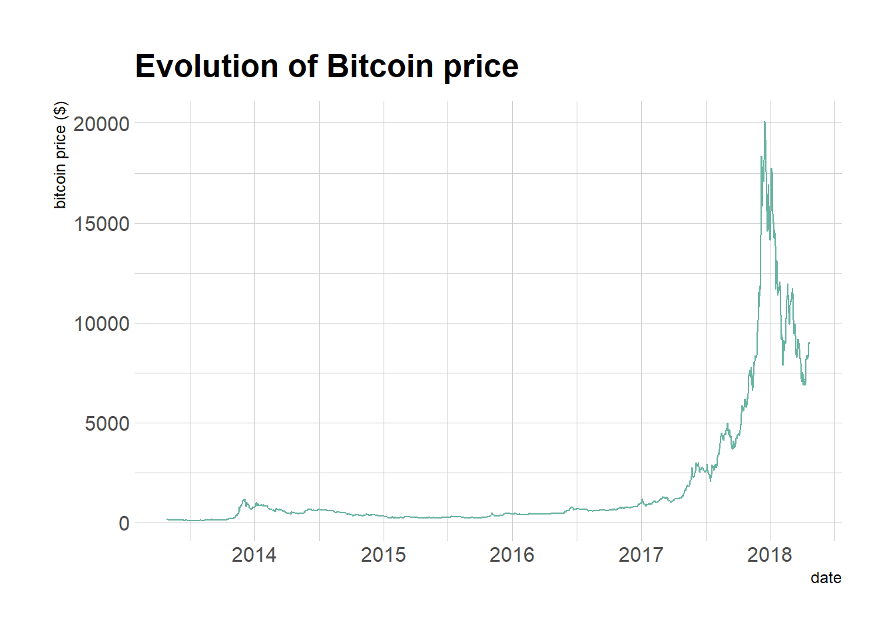
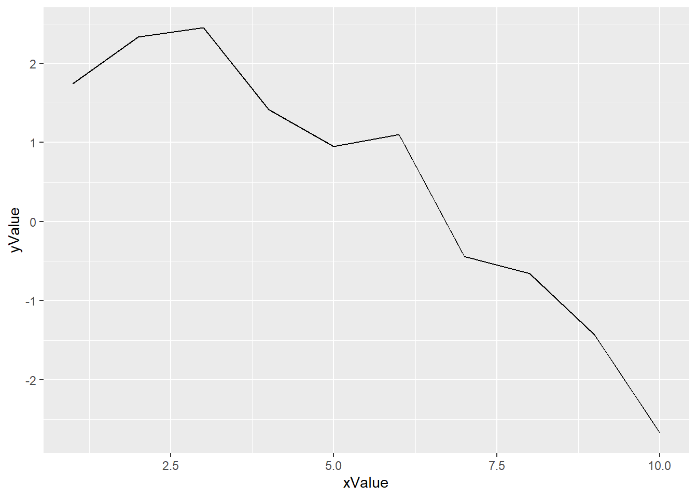

Show/Hide Code
library(tidyverse) # 数据处理与可视化的核心包集合
library(hrbrthemes) # 主题样式
library(plotly) # 交互式图表
library(patchwork) # 用于组合多个ggplot2图表
library(babynames) # 包含美国婴儿姓名数据集
library(viridis) # 提供色盲友好的配色方案library(tidyverse) # 数据处理与可视化的核心包集合
library(hrbrthemes) # 主题样式
library(plotly) # 交互式图表
library(patchwork) # 用于组合多个ggplot2图表
library(babynames) # 包含美国婴儿姓名数据集
library(viridis) # 提供色盲友好的配色方案与散点图相似，但测量点是按顺序排列的
以下示例展示了 2013 年 4 月至 2018 年 4 月期间 比特币价格的演变情况。数据来自 CoinMarketCap 网站
# 读取比特币价格数据，数据以空格分隔
df <- read_delim(
"https://raw.githubusercontent.com/holtzy/data_to_viz/master/Example_dataset/3_TwoNumOrdered.csv",
delim = " "
)
# 转换日期格式，并绘制比特币价格随时间变化的折线图
df |>
mutate(date = as.Date(date)) |> # 转换日期列为Date类型
ggplot(aes(x = date, y = value)) + # 设置x轴为日期，y轴为价格
geom_line(color = "#69b3a2") + # 绘制折线，设置颜色
ggtitle("Evolution of Bitcoin price") + # 添加标题
ylab("bitcoin price ($)") + # 设置y轴标签
theme_ipsum() # 应用hrbrthemes主题
线形图可以用来展示一个（如上例）或多个变量的演变情况。
1880 年至 2015 年间美国三个婴儿名字频率的演变情况:
# 从 github 加载 babynames 数据集，并筛选出名字为 Ashley、Patricia、Helen 的女性婴儿
don <- babynames |>
dplyr::filter(name %in% c("Ashley", "Patricia", "Helen")) |> # 只保留指定名字
dplyr::filter(sex == "F") # 只保留女性
# 绘制折线图，展示不同名字随年份的变化趋势
don |>
ggplot(aes(x = year, y = n, group = name, color = name)) + # x轴为年份，y轴为人数，按名字分组和着色
geom_line() + # 绘制折线
scale_color_viridis(discrete = TRUE) + # 使用色盲友好的配色方案
ggtitle("Popularity of American names in the previous 30 years") + # 添加标题
hrbrthemes::theme_ipsum() + # 应用 hrbrthemes 主题
labs(y = "Number of babies born") # 设置 y 轴标签
但是这种情况其实仅适用于分组不多的情况。
如果数据点的数量较少，建议用点来表示每个单独的观测值。这样可以了解观测值具体是在何时进行的：
data |>
tail(10) |> # 取数据的最后10行
ggplot(aes(x = date, y = value)) + # 设置x轴为日期，y轴为比特币价格
geom_line(color = "#69b3a2") + # 绘制折线，颜色为#69b3a2
geom_point(color = "#69b3a2", size = 4) + # 绘制散点，颜色为#69b3a2，点大小为4
labs(
x = "Date", # 设置x轴标签
y = "Bitcoin Price ($)", # 设置y轴标签
title = "Bitcoin Price Evolution in the Last 10 Days" # 设置图表标题
)在散点图中，线也用于显示趋势:
ggplot(mpg, aes(displ, hwy)) +
geom_point() +
geom_smooth(color="#69b3a2") +
theme_ipsum()
# 左图：Y轴从0开始
df |>
mutate(date = as.Date(date)) |> # 转换日期格式
tail(10) |>
ggplot(aes(x = date, y = value)) + # 设置x轴为日期，y轴为比特币价格
geom_line(color = "#69b3a2") + # 绘制折线，颜色为#69b3a2
geom_point(color = "#69b3a2", size = 4) + # 绘制散点，颜色为#69b3a2，点大小为4
ggtitle("Not cuting") + # 设置图表标题
ylab("bitcoin price ($)") + # 设置y轴标签
theme_ipsum() + # 应用hrbrthemes主题
ylim(0, 10000) # 设置y轴范围从0到10000
# 右图：Y轴截断
df |>
mutate(date = as.Date(date)) |> # 转换日期格式
tail(10) |>
ggplot(aes(x = date, y = value)) + # 设置x轴为日期，y轴为比特币价格
geom_line(color = "#69b3a2") + # 绘制折线，颜色为#69b3a2
geom_point(color = "#69b3a2", size = 4) + # 绘制散点，颜色为#69b3a2，点大小为4
ggtitle("Cuting") + # 设置图表标题
ylab("bitcoin price ($)") + # 设置y轴标签
theme_ipsum() # 应用hrbrthemes主题
比较两种Y轴设置对比特币价格走势的影响。
ggplot# 创建示例数据
xValue <- 1:10
yValue <- cumsum(rnorm(10))
data <- data.frame(xValue, yValue)
# 绘图
ggplot(data, aes(x = xValue, y = yValue)) +
geom_line()
geom_line() 绘制简单的折线图ggplot(data, aes(x = xValue, y = yValue)) +
geom_line(
color = "#69b3a2", # 线条颜色
linewidth = 2, # 线条粗细，旧版是 size
alpha = 0.9, # 线条透明度
linetype = 2 # 线条类型
) +
theme_ipsum()
geom_line()绘制带有自定义线条样式的折线图scale_y_log10() 可以将 y 轴进行 log10 变换，适用于数据范围较大或呈指数增长的情况。
data <- data.frame(
x = seq(10, 100), # x 变量，取值从10到100
y = seq(10, 100) / 2 + rnorm(90) # y 变量，等差递增并加上正态噪声
)
# 绘制普通折线图
ggplot(data, aes(x = x, y = y)) +
geom_line()
# 绘制对数折线图
ggplot(data, aes(x = x, y = y)) +
geom_line() + # 添加折线
scale_y_log10( # y 轴使用 log10 变换
breaks = c(1, 5, 10, 15, 20, 50, 100), # 指定 y 轴刻度
limits = c(1, 100) # 设置 y 轴显示范围
)
使用对数坐标轴绘制折线图，展示 y 轴 log10 变换效果
# df 是前文从 github 加载的数据
df |>
mutate(date = as.Date(date)) |> # 转化为时间
tail(10) |>
ggplot(aes(x = date, y = value)) +
geom_line(color = "grey") +
geom_point(shape = 21, color = "black", fill = "#69b3a2", size = 6) +
theme_ipsum() +
ggtitle("Evolution of bitcoin price")
don <- babynames |>
filter(name %in% c("Ashley", "Patricia", "Helen")) |> # 只保留名字为 Ashley、Patricia、Helen 的记录
filter(sex == "F") # 只保留女性婴儿数据
# 绘制分组折线图
don |>
ggplot(aes(
x = year, # x 轴为年份
y = n, # y 轴为出生人数
# group = name, # 按名字分组，有color设置就不需要这句
color = name # 按名字着色
)) +
geom_line() # 绘制折线
don |>
ggplot(
aes(
x = year, # x 轴为年份
y = n, # y 轴为出生人数
group = name, # 按名字分组
color = name # 按名字着色
)
) +
geom_line() + # 绘制折线
scale_color_viridis(discrete = TRUE) + # 使用色盲友好的配色方案
ggtitle("Popularity of American names in the previous 30 years") + # 添加标题
theme_ipsum() + # 应用 hrbrthemes 主题
ylab("Number of babies born") # 设置 y 轴标签
# 创建示例数据
data <- data.frame(
cond = rep(c("condition_1", "condition_2"), each=10),
my_x = 1:100 + rnorm(100,sd=9),
my_y = 1:100 + rnorm(100,sd=16)
)
# 绘制散点图，展示数据分布
ggplot(data, aes(x = my_x, y = my_y)) +
geom_point(color = "#69b3a2") + # 绘制散点，颜色为#69b3a2
theme_ipsum() # 应用 hrbrthemes 主题
# 绘制散点图并添加线性趋势线（不显示置信区间）
ggplot(data, aes(x = my_x, y = my_y)) +
geom_point() + # 绘制散点
geom_smooth(method = lm, color = "red", se = FALSE) + # 添加线性拟合线，颜色为红色，不显示置信区间
theme_ipsum() # 应用 hrbrthemes 主题
# 绘制散点图并添加线性趋势线及置信区间
ggplot(data, aes(x = my_x, y = my_y)) +
geom_point() + # 绘制散点
geom_smooth(method = lm, color = "red", fill = "#69b3a2", se = TRUE) + # 添加线性拟合线，颜色为红色，置信区间填充色为#69b3a2
theme_ipsum() # 应用 hrbrthemes 主题


线性模型拟合：点图、线性趋势线、置信区间演示
# 绘制比特币价格折线图，并添加注释
df |>
mutate(date = as.Date(date)) |> # 转换日期格式
ggplot(aes(x = date, y = value)) + # 设置 x 轴为日期，y 轴为价格
geom_line(color = "#69b3a2") + # 绘制折线，颜色为 #69b3a2
ylim(0, 22000) + # 设置 y 轴范围为 0 到 22000
annotate(
geom = "text", # 添加文本注释
x = as.Date("2017-01-01"), # 注释文本的 x 坐标（日期）
y = 20089, # 注释文本的 y 坐标（价格）
label = "Bitcoin price reached 20k $\nat the end of 2017" # 注释内容，\n 表示换行
) +
annotate(
geom = "point", # 添加点注释
x = as.Date("2017-12-17"), # 点的 x 坐标（日期）
y = 20089, # 点的 y 坐标（价格）
size = 10, # 点的大小
shape = 21, # 点的形状（圆形，带边框）
fill = "transparent" # 填充色为透明
) +
geom_hline(
yintercept = 5000, # 添加水平线，y=5000
color = "orange", # 水平线颜色为橙色
size = .5 # 水平线宽度
) +
theme_ipsum() # 应用 hrbrthemes 主题Base Rdata <- data.frame(
day = as.Date("2019-01-01") + 0:99, # 生成100天的日期序列
temperature = runif(100) + seq(1, 100)^2.5 / 10000, # 温度数据，添加随机噪声和递增趋势
price = runif(100) + seq(100, 1)^1.5 / 10 # 价格数据，添加随机噪声和递减趋势
)
# 最基础的折线图，展示温度随时间变化
ggplot(data, aes(x = day, y = temperature)) + # x轴为日期，y轴为温度
geom_line(color = "#69b3a2", size = 2) + # 绘制折线，颜色为#69b3a2，线宽为2
ggtitle("Temperature: range 1-10") + # 添加标题
theme_ipsum() # 应用hrbrthemes主题
# 折线图，展示价格随时间变化
ggplot(data, aes(x = day, y = price)) + # x轴为日期，y轴为价格
geom_line(color = "grey", size = 2) + # 绘制折线，颜色为灰色，线宽为2
ggtitle("Price: range 1-100") + # 添加标题
theme_ipsum() # 应用hrbrthemes主题

双图展示温度/价格随时间变化的趋势
sec.axis() 添加第二个 Y 轴
在下面的示例中，第二个 Y 轴简单地表示第一个 Y 轴乘以 10，这得益于 trans 参数提供的 ~.*10 数学关系。
ggplot(data, aes(x = day, y = temperature)) +
# 自定义 Y 轴比例
scale_y_continuous(
name = "First Axis", # 主 Y 轴名称
sec.axis = sec_axis( # 添加第二个 Y 轴
transform = ~ . * 10, # 副轴为主轴数值的 10 倍
name = "Second Axis" # 副 Y 轴名称
)
) +
theme_ipsum() # 应用 hrbrthemes 主题
把变量曲线也画出来，（也进行了比例转换）
coeff <- 10
ggplot(data, aes(x = day)) +
geom_line(aes(y = temperature)) + # 绘制温度折线，y 轴为 temperature
geom_line(aes(y = price / coeff)) + # 绘制价格折线，y 轴为 price/10，使其与温度在同一范围
scale_y_continuous(
# 主 Y 轴设置
name = "First Axis", # 主 Y 轴名称
# 添加第二个 Y 轴
sec.axis = sec_axis(
~ . * coeff, # 副轴为主轴数值的 10 倍
name = "Second Axis" # 副 Y 轴名称
)
)再美化一下：
coeff <- 10
# 定义颜色常量
temperatureColor <- "#69b3a2" # 温度线颜色
priceColor <- rgb(0.2, 0.6, 0.9, 1) # 价格线颜色
ggplot(data, aes(x = day)) +
# 绘制温度折线，y 轴为 temperature，线宽为2，颜色为 temperatureColor
geom_line(aes(y = temperature), size = 2, color = temperatureColor) +
# 绘制价格折线，y 轴为 price/coeff，线宽为2，颜色为 priceColor
geom_line(aes(y = price / coeff), size = 2, color = priceColor) +
# 设置主 y 轴和副 y 轴
scale_y_continuous(
name = "Temperature (Celsius °)", # 主 y 轴名称
sec.axis = sec_axis(~ . * coeff, name = "Price ($)") # 副 y 轴为主轴数值的 coeff 倍，名称为 Price ($)
) +
theme_ipsum() + # 应用 hrbrthemes 主题
theme(
axis.title.y = element_text(color = temperatureColor, size = 13), # 主 y 轴标题颜色和字号
axis.title.y.right = element_text(color = priceColor, size = 13) # 副 y 轴标题颜色和字号
) +
ggtitle("Temperature down, price up") # 添加标题条形图+柱状图：
coeff <- 10
# 定义颜色常量
temperatureColor <- "#69b3a2" # 温度条形颜色
priceColor <- rgb(0.2, 0.6, 0.9, 1) # 价格折线颜色
ggplot(head(data, 80), aes(x = day)) +
# 绘制温度的条形图
geom_bar(
aes(y = temperature), # y 轴为温度
stat = "identity", # 使用原始数值绘制条形
size = .1, # 边框线宽
fill = temperatureColor, # 填充色
color = "black", # 边框颜色
alpha = .4 # 透明度
) +
# 绘制价格的折线图（已缩放）
geom_line(
aes(y = price / coeff), # y 轴为价格/系数
size = 2, # 线宽
color = priceColor # 线条颜色
) +
# 设置主 y 轴和副 y 轴
scale_y_continuous(
name = "Temperature (Celsius °)", # 主 y 轴名称
sec.axis = sec_axis(~ . * coeff, name = "Price ($)") # 副 y 轴为主轴数值的 coeff 倍，名称为 Price ($)
) +
theme_ipsum() + # 应用 hrbrthemes 主题
# 自定义 y 轴标题颜色和字号
theme(
axis.title.y = element_text(color = temperatureColor, size = 13), # 主 y 轴标题样式
axis.title.y.right = element_text(color = priceColor, size = 13) # 副 y 轴标题样式
) +
ggtitle("Temperature down, price up") # 添加标题